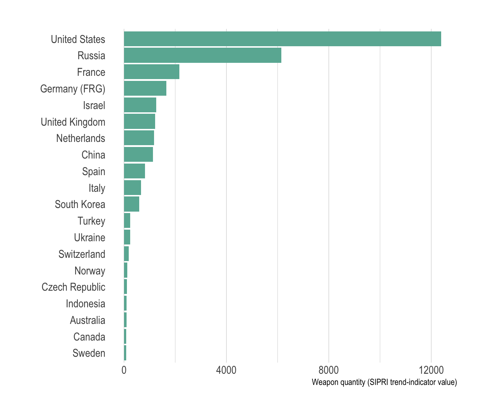
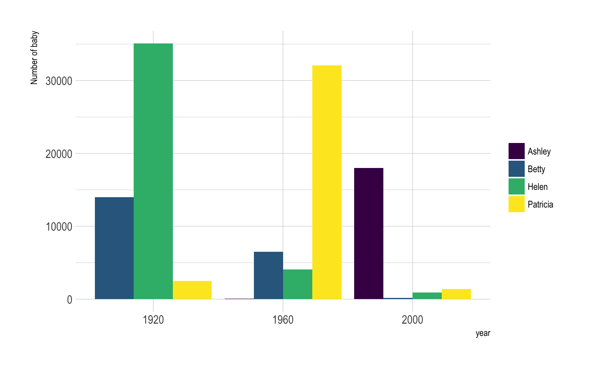
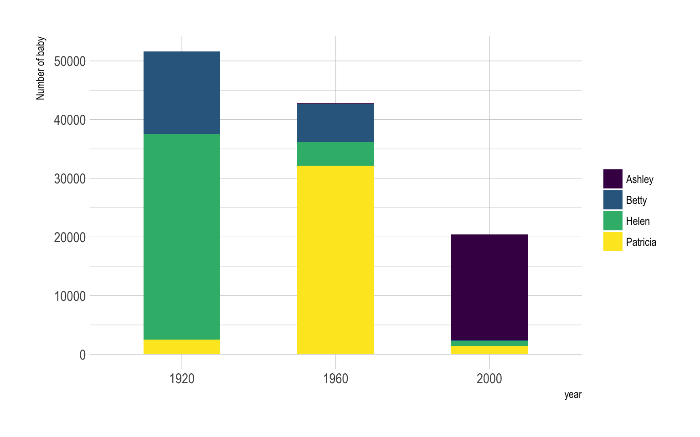
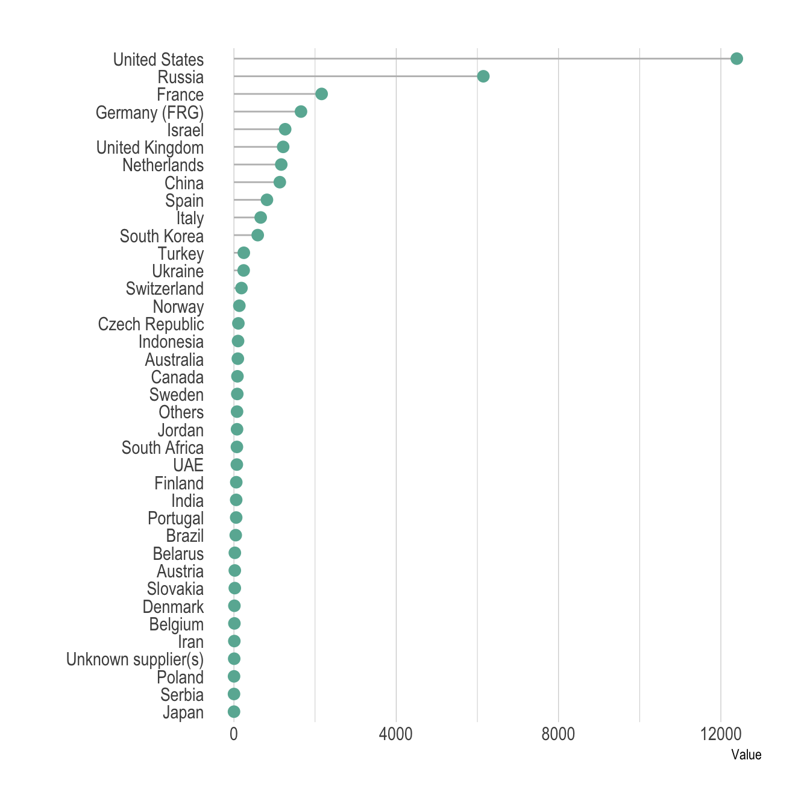
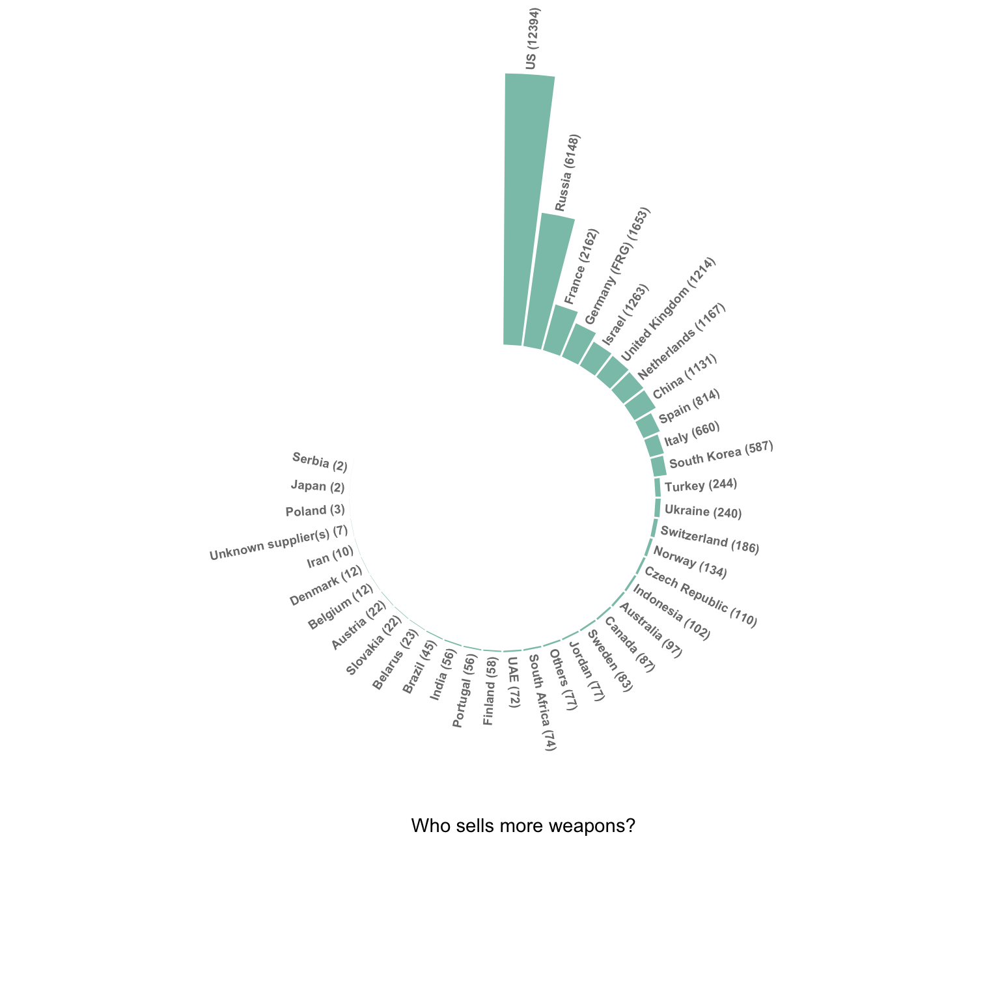

Barplot
definition - mistake - related - code
A barplot (or barchart) is one of the most common types of graphic. It shows the relationship between a numeric and a categoric variable. Each entity of the categoric variable is represented as a bar. The size of the bar represents its numeric value.
Here is an example showing the quantity of weapons exported by the top 20 largest exporters in 2017 (more info here):
# Libraries
library(tidyverse)
library(hrbrthemes)
library(kableExtra)
options(knitr.table.format = "html")
# Load dataset from github
data <- read.table("https://raw.githubusercontent.com/holtzy/data_to_viz/master/Example_dataset/7_OneCatOneNum.csv", header=TRUE, sep=",")
# Barplot
data %>%
filter(!is.na(Value)) %>%
arrange(Value) %>%
tail(20) %>%
mutate(Country=factor(Country, Country)) %>%
ggplot( aes(x=Country, y=Value) ) +
geom_bar(stat="identity", fill="#69b3a2") +
coord_flip() +
theme_ipsum() +
theme(
panel.grid.minor.y = element_blank(),
panel.grid.major.y = element_blank(),
legend.position="none"
) +
xlab("") +
ylab("Weapon quantity (SIPRI trend-indicator value)")
A barplot shows the relationship between a numeric and a categoric variable. In the previous graphic, each country is a level of the categoric variable, and the quantity of weapon sold is the numeric variable. An ordered barplot is a very good choice here since it displays both the ranking of countries and their specific value.
A barplot can also display values for several levels of grouping. In the following graphic, the number of given baby name is provided by name (level1) and per year (level2). With this kind of information it is possible to build a grouped barplot:
# Libraries
library(tidyverse)
library(hrbrthemes)
library(babynames)
library(viridis)
# Load dataset from github
data <- babynames %>%
filter(name %in% c("Ashley", "Amanda", "Jessica", "Patricia", "Linda", "Deborah", "Dorothy", "Betty", "Helen")) %>%
filter(sex=="F")
# A grouped barplot
data %>%
filter(name %in% c("Ashley", "Patricia", "Betty", "Helen")) %>%
filter(year %in% c(1920, 1960, 2000)) %>%
mutate(year=as.factor(year)) %>%
ggplot( aes(x=year, y=n, fill=name)) +
geom_bar(stat="identity", position="dodge") +
scale_fill_viridis(discrete=TRUE, name="") +
theme_ipsum() +
ylab("Number of baby")
Instead of puting the bars one beside each other it is possible to stack them, resulting in a stacked barplot:
# A grouped barplot
data %>%
filter(name %in% c("Ashley", "Patricia", "Betty", "Helen")) %>%
filter(year %in% c(1920, 1960, 2000)) %>%
mutate(year=as.factor(year)) %>%
ggplot( aes(x=year, y=n, fill=name)) +
geom_bar(stat="identity", width = 0.5) +
scale_fill_viridis(discrete=TRUE, name="") +
theme_ipsum() +
ylab("Number of baby")
Barplot is sometimes described as a boring way to visualize information, despite its incredible efficiency. There are a few variations that allows to create more eye-catching figures without loosing any of the barplot accuracy. My favorite variation is the lollipop plot that replaces the bars with a segment and a dot. It results in a less cluttered figure that is often more attractive:
# Load dataset from github
data <- read.table("https://raw.githubusercontent.com/holtzy/data_to_viz/master/Example_dataset/7_OneCatOneNum.csv", header=TRUE, sep=",")
# Plot
data %>%
filter(!is.na(Value)) %>%
arrange(Value) %>%
mutate(Country=factor(Country, Country)) %>%
ggplot( aes(x=Country, y=Value) ) +
geom_segment( aes(x=Country ,xend=Country, y=0, yend=Value), color="grey") +
geom_point(size=3, color="#69b3a2") +
coord_flip() +
theme_ipsum() +
theme(
panel.grid.minor.y = element_blank(),
panel.grid.major.y = element_blank(),
legend.position="none"
) +
xlab("")
Circular barplot can also be considered if you have many groups. The group comparison is less accurate, thus this option must be selected if there is an obvious pattern to show in the data.
# Load dataset from github
data <- read.table("https://raw.githubusercontent.com/holtzy/data_to_viz/master/Example_dataset/7_OneCatOneNum.csv", header=TRUE, sep=",")
# Order data
tmp <- data %>%
filter(!is.na(Value)) %>%
arrange(desc(Value)) %>%
mutate(Country=factor(Country, Country))
# Set a number of 'empty bar'
empty_bar=10
# Add lines to the initial tmpset
to_add = matrix(NA, empty_bar, ncol(tmp))
colnames(to_add) = colnames(tmp)
tmp=rbind(tmp, to_add)
tmp$id=seq(1, nrow(tmp))
# Get the name and the y position of each label
label_tmp=tmp
number_of_bar=nrow(label_tmp)
angle= 90 - 360 * (label_tmp$id-0.5) /number_of_bar # I substract 0.5 because the letter must have the angle of the center of the bars. Not extreme right(1) or extreme left (0)
label_tmp$hjust<-ifelse( angle < -90, 1, 0)
label_tmp$angle<-ifelse(angle < -90, angle+180, angle)
label_tmp$Country <- gsub("United States", "US", label_tmp$Country)
label_tmp$Country <- paste(label_tmp$Country, " (", label_tmp$Value,")", sep="")
# Make the plot
ggplot(tmp, aes(x=as.factor(id), y=Value)) + # Note that id is a factor. If x is numeric, there is some space between the first bar
geom_bar(stat="identity", fill=alpha("#69b3a2", 0.8)) +
ylim(-7000,13000) +
theme_minimal() +
theme(
axis.text = element_blank(),
axis.title = element_blank(),
panel.grid = element_blank(),
plot.margin = unit(rep(-1,4), "cm")
) +
coord_polar(start = 0) +
geom_text(data=label_tmp, aes(x=id, y=Value+200, label=Country ), color="black", fontface="bold",alpha=0.6, size=2.5, angle= label_tmp$angle, hjust=label_tmp$hjust, inherit.aes = FALSE ) +
geom_text( aes(x=24, y=8000, label="Who sells more weapons?"), color="black", inherit.aes = FALSE)
Do not confound barchart with histogram. A histogram has only a numeric variable as input and shows its distribution.
Order your bars. If the levels of your categoric variable have no obvious order, order the bars following their values.
Several values per group? Don’t use a barplot. Even with error bars, it hides information and other type of graphic like boxplot or violin are much more appropriate.
The R and Python graph galleries are 2 websites providing hundreds of chart example, always providing the reproducible code. Click the button below to see how to build the chart you need with your favorite programing language.
R graph gallery Python gallery
Any thoughts on this? Found any mistake? Disagree? Please drop me a word on twitter or in the comment section below:
A work by Yan Holtz for data-to-viz.com